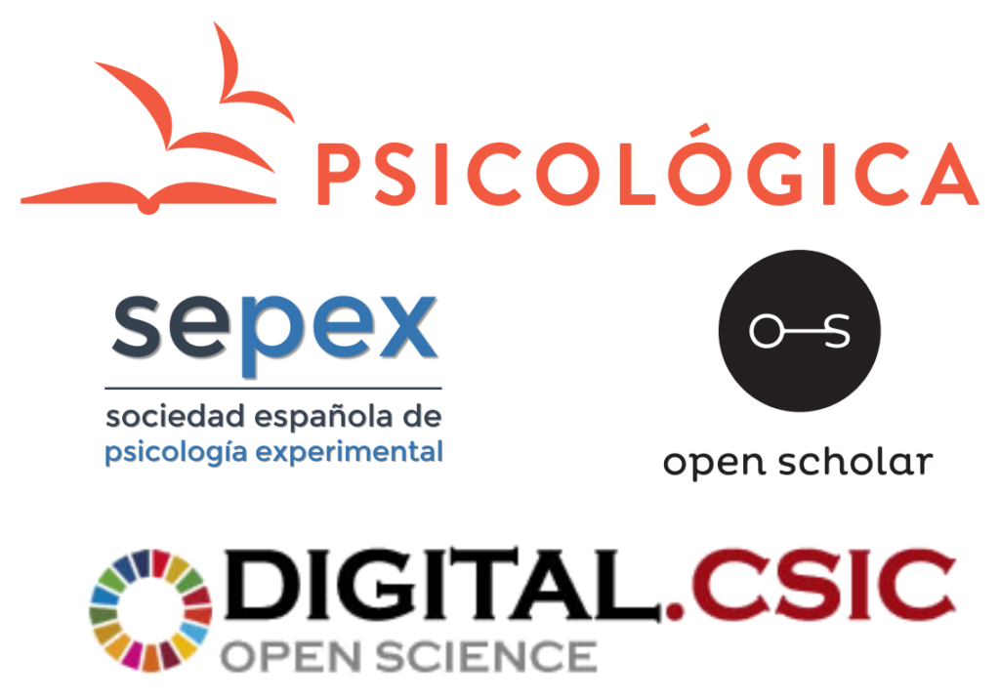

Psicológica y DIGITAL.CSIC aúnan esfuerzos a favor del acceso abierto diamante sostenible y de los servicios editoriales de repositorios
Nota de prensa conjunta publicada por Open Scholar, SEPEX, y CSIC

Nos complace anunciar el relanzamiento de Psicológica, la revista de la Sociedad Española de Psicología Experimental (SEPEX), como revista de acceso abierto diamante que publicará sus artículos exclusivamente en DIGITAL.CSIC, el repositorio institucional del Consejo Superior de Investigaciones Científicas (CSIC).
Este proyecto arranca en un momento en que tanto la sostenibilidad de las revistas de acceso abierto diamante como las oportunidades de consolidar los servicios de los repositorios como editores han pasado a primer plano en el debate global sobre prácticas innovadoras en la comunicación científica. Por un lado, a la luz del intenso debate sobre los verdaderos costes de la publicación académica, la asociación directa entre una revista propiedad de una sociedad académica y un repositorio financiado con fondos públicos demuestra la viabilidad de un modelo de publicación novedoso y sostenible que no supone ningún coste para los autores, las instituciones, los lectores o las bibliotecas. Por otra parte, DIGITAL.CSIC da un paso más en su programa de ampliación de servicios de publicación, al proporcionar un flujo de trabajo completo de revisión por pares. Académicos voluntarios de alto nivel vinculados a la revista, con la colaboración de revisores expertos, realizarán un riguroso control de calidad de los manuscritos entrantes, mientras que el repositorio institucional y su personal de bibliotecarios profesionales proporcionan una infraestructura de publicación de vanguardia, incluyendo la gestión de la revisión por pares, la curación de metadatos, la asignación de DOIs, el apoyo a la indexación en bases de datos y la recolección por parte de agregadores y motores de búsqueda, el servicio de apoyo a los usuarios y la preservación digital. Todo este conjunto de servicios sobre un repositorio institucional abre la puerta a una publicación verdaderamente innovadora controlada por la comunidad académica y sin la intermediación de terceros.
Esta prometedora iniciativa se basa en el Módulo de Revisiones por Pares Abiertas (OPRM) que se integró en DIGITAL.CSIC como proyecto piloto en 2016 bajo la coordinación de Open Scholar y la financiación de OpenAIRE. Nuestra experiencia con el módulo nos ayudó a conocer mejor los comportamientos y actitudes de los investigadores y creemos que ha llegado el momento oportuno para acelerar la transición hacia un nuevo ecosistema de publicación basado en una red de repositorios distribuidos con servicios superpuestos avanzados, de acuerdo con el modelo propuesto por la Confederación de Repositorios de Acceso Abierto (COAR).
El control absoluto del proceso de publicación, en ausencia de una editorial comercial, no sólo elimina los costes, sino que permite aplicar una serie de prácticas innovadoras guiadas únicamente por el interés por la calidad científica. Los manuscritos enviados a Psicológica estarán disponibles inmediatamente en DIGITAL.CSIC como preprints. Los informes registrados (“registered reports”) serán aceptados y se recomendarán especialmente para los estudios de replicación. La disponibilidad de los datos y del código del software será un requisito previo para que un artículo experimental pase a la fase de revisión. Los editores académicos asignarán los manuscritos a revisores expertos a los que se aconsejará que firmen sus revisiones. El texto completo de la revisión se publicará como una obra digital independiente con su propio identificador persistente (DOI) y se vinculará al manuscrito revisado. También se publicarán las respuestas de los autores a los revisores, lo que hará que toda la discusión académica sea abierta. Los manuscritos que al final de la fase de revisión cumplan las normas de calidad establecidas por los editores académicos se incluirán en el corpus de la revista y se enviarán a los servicios de indexación y motores de búsqueda. Es importante destacar que los autores conservarán los derechos de autor de sus trabajos y serán libres de elegir la licencia que mejor se adapte a sus intereses. Por último, pero no menos importante, los trabajos evaluados, sus autores, las revisiones relacionadas y los revisores se podrán beneficiar de un innovador sistema de reputación basado en las calificaciones de calidad generadas durante el proceso de revisión por pares.
Esta colaboración pionera entre la revista de la sociedad Psicológica y DIGITAL.CSIC está coordinada por Open Scholar, una organización internacional con una larga trayectoria en la investigación y desarrollo de herramientas que promueven la transparencia en el proceso de publicación académica.
Declaramos nuestra firme intención de seguir promoviendo este innovador modelo de publicación e invitamos a las partes interesadas, incluidas revistas de sociedades científicas, bibliotecas, gestores de repositorios, e instituciones y asociaciones académicas, a que se pongan en contacto con nosotros para obtener más información y apoyo en el inicio de nuevos proyectos o en la transición de revistas existentes.
SEPEX DIGITAL.CSIC OPEN SCHOLAR
Acerca de SEPEX
La Sociedad Española de Psicología Experimental (SEPEX) se fundó en 1997 con el objetivo de promover el desarrollo del conocimiento científico en todos los campos de la psicología mediante la difusión de los resultados de investigación, el fortalecimiento de vínculos entre sociedades y organizaciones nacionales e internacionales y la organización de reuniones científicas.
La revista Psicológica se fundó en 1980 en la Universidad de Valencia (UV) y, poco después de la creación de la SEPEX, se convirtió en la revista insignia de la sociedad, publicando artículos que abarcan todo el espectro de la Psicología Experimental. En la actualidad, la revista está cofinanciada por ambas entidades.
Acerca de DIGITAL.CSIC
DIGITAL.CSIC es el repositorio multidisciplinar del CSIC desde 2008 y con más de 245.000 resultados de investigación se ha convertido en el mayor repositorio de acceso abierto de España y es uno de los principales proveedores de datos del sistema de Ciencia Abierta en Europa.
A lo largo de los años, DIGITAL.CSIC ha ido diversificando su agenda para contribuir a la construcción de un ecosistema global de Ciencia Abierta. La infraestructura cuenta con un conjunto de servicios innovadores que incluyen la asignación de DOIs para resultados de investigación, la gestión de diferentes tipos de perfiles de entidades, el Módulo de Revisión por Pares Abiertas (OPRM), la monitorización del uso de sus contenidos de acceso abierto, la evaluación del cumplimiento de los Principios FAIR y la contribución de datos a la Nube Europea de Ciencia Abierta (EOSC en sus siglas en inglés).
Desde 2019 el CSIC exige a los investigadores institucionales el depósito y acceso abierto de sus publicaciones revisadas por pares y conjuntos de datos de investigación asociados y vincula su cumplimiento a los ejercicios de evaluación institucional.
Acerca de OPEN SCHOLAR
Open Scholar se fundó en 2012 como una organización internacional de académicos voluntarios que desarrollan ideas y herramientas que promueven la colaboración científica abierta y transparente para una organización, evaluación y difusión del conocimiento global más rápida, eficiente y natural. El grupo lleva a cabo varios proyectos paralelos relacionados con la visión reflejada en el Manifiesto de la Revisión por Pares Independiente. En 2016, con el apoyo financiero de OpenAIRE, Open Scholar coordinó un consorcio de cinco socios para desarrollar el Módulo de Revisión por Pares Abiertas, una herramienta de código abierto que puede instalarse en repositorios institucionales para permitir la revisión por pares abierta como servicio de valor añadido.